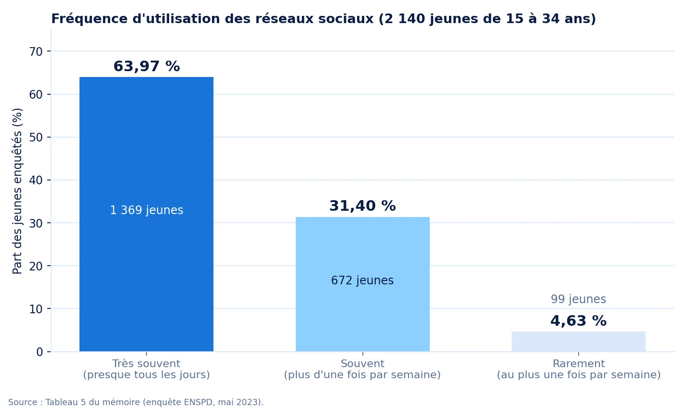
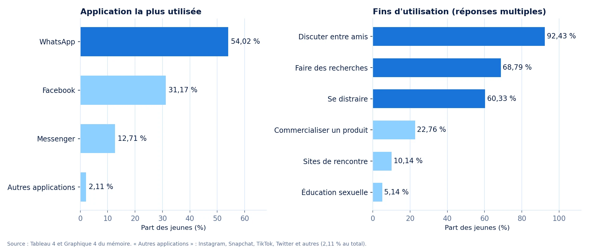
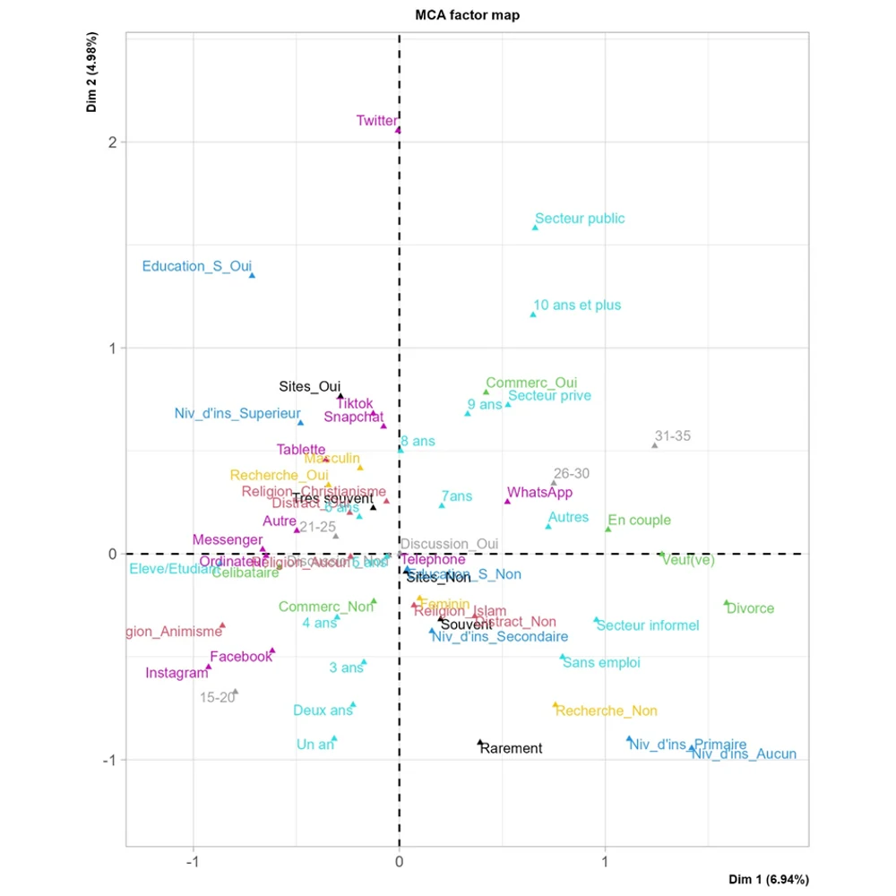
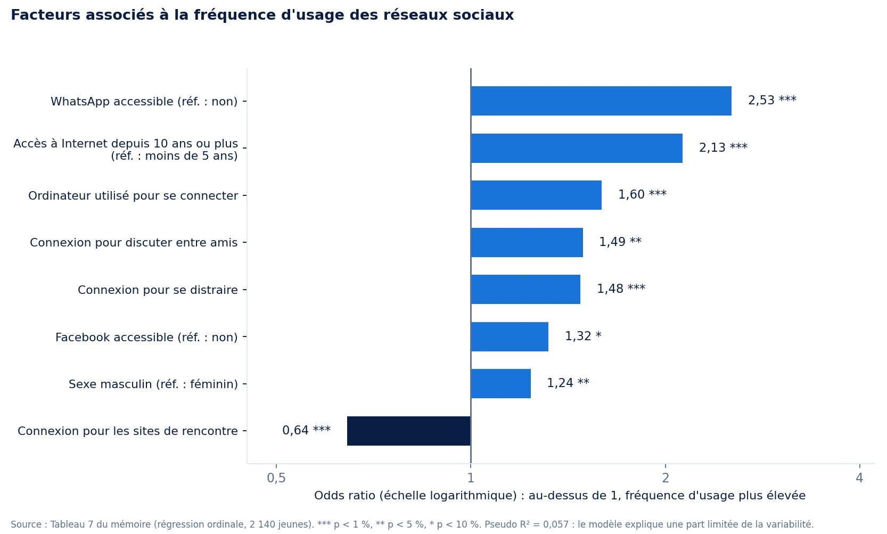

Facteurs à risque de l'utilisation excessive des réseaux sociaux à Parakou
Qui est le plus exposé à un usage excessif des réseaux sociaux ? Une analyse statistique des facteurs associés chez les jeunes de 15 à 34 ans.
Un usage massif, des effets possibles sur le bien-être
Un phénomène répandu
Selon les chiffres cités dans le mémoire, 5,35 milliards de personnes utilisaient Internet dans le monde en janvier 2024 (66,2 % de la population mondiale). Au Bénin, on comptait 4,6 millions d'internautes en 2023, soit 34 % de la population.
Un risque à comprendre
Un usage excessif peut conduire à une cyberdépendance, avec des effets sur la santé mentale et le bien-être. Un rapport de l'UNICEF, cité dans le mémoire, indique qu'un adolescent sur trois serait accro aux réseaux sociaux.
Trois questions, trois hypothèses
Objectif général
Analyser les facteurs pouvant influencer le comportement addictif vis-à-vis de l'utilisation des réseaux sociaux dans la ville de Parakou.
Objectifs spécifiques
Établir un profil des socionautes qui utilisent excessivement les réseaux sociaux, et identifier les facteurs susceptibles d'expliquer cet usage.
| Hypothèse | Verdict | Lecture des résultats |
|---|---|---|
| Les femmes utilisent les réseaux sociaux plus que les hommes. | Infirmée | L'ACM place les hommes parmi les utilisateurs les plus actifs ; le sexe masculin reste significatif dans le modèle (odds ratio de 1,24 ; p = 0,039). |
| Les étudiants sont ceux qui utilisent le plus les réseaux sociaux. | Confirmée | Les étudiants figurent dans le profil type des plus actifs, avec les célibataires de 21 à 25 ans. |
| L'âge, le sexe et la situation matrimoniale sont des facteurs significatifs. | Partiellement | Le sexe est significatif dans le modèle. L'âge et la situation matrimoniale sont associés à la fréquence d'usage en analyse bivariée, mais ne le sont plus dans la régression. |
Une enquête de l'ENSPD, quatre étapes d'analyse
Les données
Enquête de l'ENSPD réalisée en mai 2023 à Parakou sur les technologies de l'information et de la communication chez les adolescents et les jeunes. Ce mémoire exploite les questionnaires individuels de 2 140 jeunes de 15 à 34 ans, utilisateurs de téléphone depuis au moins douze mois. Le plan d'échantillonnage est aléatoire stratifié.
La variable étudiée
La fréquence d'utilisation des réseaux sociaux, en trois modalités ordonnées : très souvent (presque tous les jours), souvent (plus d'une fois par semaine) et rarement. Les variables explicatives couvrent le profil sociodémographique, les équipements, les applications et les fins d'utilisation.
Analyse univariée
Description de l'échantillon et de la fréquence d'utilisation, pour évaluer l'ampleur du phénomène.
Analyse bivariée
Tests d'indépendance du khi-deux entre chaque variable explicative et la fréquence d'utilisation.
Analyse des correspondances multiples
Projection des individus et des modalités sur deux axes (11,92 % de l'inertie, axes retenus par la méthode du coude) pour dégager un profil type.
Régression logistique ordonnée
Modèle à variable dépendante ordonnée (très souvent, souvent, rarement), lu à travers les odds ratios.
Ce que montrent les données

Un usage quasi quotidien
63,97 % des jeunes (1 369 personnes) utilisent les réseaux sociaux très souvent, 31,40 % souvent et 4,63 % rarement. WhatsApp est l'application la plus utilisée (54,02 %), devant Facebook (31,17 %) et Messenger (12,71 %).

Tests d'association et profil type
Tests du khi-deux
La fréquence d'utilisation est significativement associée au sexe, à l'âge, à l'ethnie, à la situation matrimoniale, au niveau d'instruction, à la catégorie socioprofessionnelle et aux équipements multimédias. Elle ne l'est pas à la religion (p = 0,484) ; l'application la plus utilisée n'est significative qu'au seuil de 10 % (p = 0,099).
Analyse des correspondances multiples
Deux axes retiennent 11,92 % de l'inertie. Les utilisateurs les plus actifs sont plutôt des hommes, âgés de 21 à 25 ans, célibataires, étudiants, connectés depuis 6 à 8 ans environ.

Régression logistique ordonnée

Fins d'utilisation
La connexion pour se distraire ou pour discuter entre amis est associée à une fréquence plus élevée (odds ratios de 1,48 et 1,49), celle pour les sites de rencontre à une fréquence plus faible (0,64).
Ancienneté d'accès à Internet
Un accès depuis 10 ans ou plus multiplie les odds par 2,13 par rapport à un accès depuis moins de 5 ans.
Applications accessibles
WhatsApp est le facteur le plus fort (2,53) ; Facebook est marginalement significatif (1,32 ; p = 0,077).
Outil de connexion
Se connecter avec un ordinateur est associé à une fréquence plus élevée (1,60).
Sexe
Les hommes ont des odds de fréquence plus élevée de 1,24 par rapport aux femmes (p = 0,039).
Lire les résultats avec prudence
- Les données reposent sur l'auto-déclaration des participants, avec un risque de sous-estimation ou de surestimation.
- La variable étudiée est la fréquence d'usage, qui sert d'approximation de l'usage excessif : les données ne permettaient pas de mesurer la dépendance elle-même. Le mémoire recommande l'échelle BSMAS pour la mesurer.
- Le pouvoir explicatif du modèle est limité (pseudo R² de 0,057) : les facteurs retenus n'expliquent qu'une part de la variabilité.
- L'échantillon compte 65,79 % de femmes, et l'enquête n'avait pas été conçue pour cette question précise.
- Les résultats décrivent des associations observées à un instant donné, pas des relations de cause à effet.
Ce que le mémoire propose
- Sensibiliser les utilisateurs aux risques associés à un usage excessif.
- Promouvoir une utilisation plus consciente et des stratégies de gestion du temps en ligne.
- Cibler les campagnes de sensibilisation sur les populations les plus actives : étudiants, 21 à 25 ans, célibataires.
- Mener de nouvelles recherches avec des échantillons plus larges et l'échelle BSMAS.
Identifier des facteurs de risque, du terrain à la décision
Ce que ce travail démontre
Une chaîne d'analyse complète : formuler des hypothèses, décrire une enquête, tester des associations, dégager un profil type par analyse multidimensionnelle, estimer l'effet de chaque facteur avec un modèle ordinal, puis interpréter les résultats et leurs limites.
Pourquoi il compte pour l'actuariat
Identifier des facteurs de risque, modéliser une variable ordonnée et lire l'effet de chaque facteur : c'est la même logique que l'étude des facteurs de risque en assurance, où l'on cherche à repérer les profils les plus exposés.
Lire le mémoire
Version publique du mémoire : la page de dédicace a été retirée. Les données de l'enquête de l'ENSPD ne sont pas publiées.